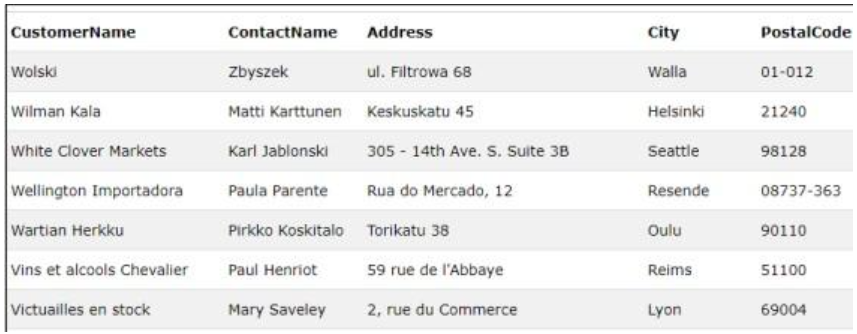

Order by adalah perintah yang digunakan untuk mengurutkan data pada table secara ascending (menaik) atau descending (menurun). Misalkan kita memiliki tabel Karyawan seperti ini:
Pemakaian perintah select selain dapat digabungkan dengan anak kalimat ORDER BY yang bertujuan untuk mengurutkan data, juga dapat digabungkan dengan anak kalimat GROUP BY yang bertujuan untuk mengelompokkan data (record) yang sama. Pada kasus sederhana anak kalimat GROUP BY berfungsi seperti perintah DISTINCT, kelebihan GROUP BY adalah dapat digunakan bersama dengan fungsi agregate yang beroperasi pada seluruh record yang akan digabung untuk membentuk satu record (baris) tunggal.
SQL GROUP BY sering digunakan pada fungsi agregat seperti (COUNT(), MAX(), MIN(), SUM(), AVG()).
SELECT column_name(s) FROM table_name WHERE condition GROUP BY column_name(s) ORDER BY column_name(s);
Kelompok fungsi ini digunakan untuk suatu nilai, dengan kualifikasi yang merupakan hasil dari perhitungan sekelompok baris data atau table. Pada table 2, disajikan fungsi agregat yang memiliki kualifikasi tersendiri untuk menghasilkan suatu nilai tertentu.
SELECT COUNT(column_name)FROM table_name WHERE condition;
Table kiri (mahasiswa) akan menjadi table master dan mencari nilai yang sama di table transaksi. Apabila ada mahasiswa yang tidak meminjam buku maka diberi nilai NULL.